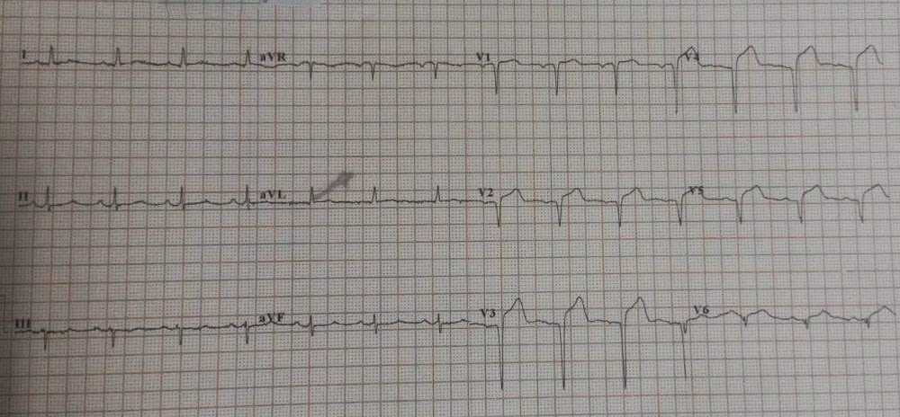
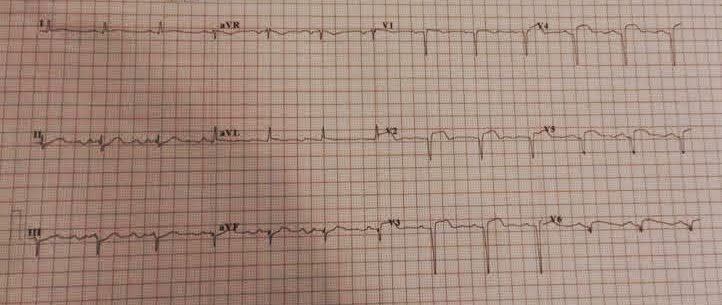

28/08/2014 — Đau ngực 9 giờ và sóng Q sâu: đã quá muộn để dùng tiêu sợi huyết? (Khung thời gian tái tưới máu; mức độ cấp tính trên điện tâm đồ)
Bản dịch tiếng Việt của bài "9 Hours of Chest Pain and Deep Q-waves: Is it too late for Thrombolytics? (Time Window for Reperfusion; Acuteness on the ECG)" – Dr. Smith’s ECG Blog. Giữ nguyên toàn bộ 2 hình ảnh của bản gốc.
Một bệnh nhân tăng huyết áp 50 tuổi đến viện vì đau ngực kiểu bóp nghẹt vùng trung tâm kéo dài 9 giờ. Huyết áp là 250/120, và sau khi truyền nitroglycerin tĩnh mạch liên tục, huyết áp giảm xuống 170/90. Đây là điện tâm đồ lúc nhập viện:


Hãy trả lời câu hỏi 1: Sóng T quá cao để có thể là phình thất trái! Bạn có thể dùng Quy tắc phình thất trái (LV aneurysm rule) này để xác định đó là STEMI cấp hay ST chênh lên do phình thất trái.
Câu hỏi 2 được trả lời chi tiết ở phần dưới.
Khung thời gian cho thuốc tiêu sợi huyết: Nghiên cứu GISSI và thử nghiệm LATE đều đã xác lập rằng tiêu sợi huyết muộn, cho tới 12 giờ sau khởi phát đau ngực, có lợi trong STEMI. Phân tích gộp của nhóm hợp tác FTT đã xác nhận điều này, và lợi ích tại các mốc thời gian khác nhau sau khởi phát đau được mô tả rõ nhất trong bài báo của Boersma (xem Bảng bên dưới). Tuy vậy, có nhiều STEMI vẫn sẽ có lợi khi đã quá 12 giờ đau ngực: thời điểm khởi phát đau ngực không nhất thiết là thời điểm khởi phát thiếu máu cục bộ không hồi phục. Nhiều nhồi máu cơ tim có hiện tượng tắc và tái tưới máu động (dynamic) ở động mạch liên quan đến nhồi máu, và cơn đau có thể kéo dài nhiều ngày mà không có hoại tử đáng kể nào.
Chỉ dấu tốt nhất về “mức độ cấp tính” (Acuteness) của nhồi máu cơ tim là điện tâm đồ, với các dấu hiệu sau cho thấy mức độ cấp tính cao:
1. Không có sóng Q
2. Đoạn ST chênh cao
3. Sóng T có kích thước lớn
4. Không có sóng T đảo ngược — tất cả đều là chỉ dấu của mức độ cấp tính cao.
Ở cuối bài, tôi có in lại một phần tôi đã viết về “mức độ cấp tính”, trích từ một chương về điều trị tái tưới máu mà tôi viết cùng Bill Brady.
Trong ca này, đoạn ST chênh cao, sóng T lớn, và không có sóng T đảo ngược. Sóng Q là chỉ dấu duy nhất của thiếu máu cục bộ kéo dài. Hơn nữa, đau ngực chưa tới 12 giờ. Trừ khi có chống chỉ định quan trọng với tái tưới máu (ví dụ nguy cơ chảy máu cao), thì có chỉ định dùng tPA hoặc PCI.
Diễn tiến ca bệnh
Bác sĩ không thuyết phục được bác sĩ can thiệp nhận bệnh nhân để làm PCI (tôi không rõ vì sao).
Bác sĩ cấp cứu đã gửi ca này cho tôi ngay lúc đó, băn khoăn liệu các sóng QS (không có bất kỳ sóng R nào) có phải là chống chỉ định của tPA hay không. Trước khi tôi kịp trả lời rằng “không”, chúng không phải là chống chỉ định, anh ấy đã cho tPA.
Ngay sau khi dùng tPA, điện tâm đồ này được ghi lại:


Ngoài ra, và quan trọng là, cơn đau đã hết hoàn toàn sau khi dùng thuốc tiêu sợi huyết.
Siêu âm tim cho thấy vô động phần giữa-mỏm của vách trước và phần giữa-mỏm của vách dưới. Không có thành mỏng gợi ý nhồi máu cơ tim cũ (không phải phình thất trái). Hình ảnh này phù hợp với STEMI thành trước cấp.
Sau đó, bác sĩ can thiệp đồng ý nhận bệnh nhân để làm PCI cứu vãn (rescue PCI) (dù thuốc tiêu sợi huyết rõ ràng đã làm tan huyết khối). Chụp mạch vành cho thấy một tổn thương hẹp nặng ở LAD đoạn giữa, không còn huyết khối và dòng chảy TIMI-3 (rất tốt). Như vậy, động mạch đã thông. Tổn thương được đặt stent.
Thuốc tiêu sợi huyết còn hiệu quả trong bao lâu sau khởi phát đau ngực (khung thời gian dài bao lâu)?
Bảng 33-1 (trích từ sách của tôi: The ECG in Acute MI): Thời gian đến khi tiêu sợi huyết và
mức giảm tử vong. Nguồn: Boersma
và cs., Early thrombolytic treatment in acute myocardial infarction:
reappraisal of the golden hour. Lancet, ngày 21 tháng Mười năm 1996, 348:771-775. (Áp dụng cho mọi nhồi máu cơ tim: thành trước, thành dưới, thành bên)
| Khung thời gian |
Số người được cứu sống trên 1000 bệnh nhân được điều trị (khoảng tin cậy) |
| 0-1 giờ |
65 (38-93) |
| 1-2 giờ |
37 (20-55) |
| 2-3 giờ |
26 (14-37) |
| 3-6 giờ |
29 (19-40) |
| 6-12 giờ |
18 (7-29) |
| 12-24 giờ |
9 (-5-22) (không có ý nghĩa thống kê) |
Ý nghĩa của sóng Q bệnh lý trên điện tâm đồ ban đầu là gì?
Sóng Q thường được thấy ngay trong giờ đầu sau khởi phát đau. Raitt và cs. nhận thấy, trong một phân nhóm 432 bệnh nhân nhồi máu cơ tim lần đầu có điện tâm đồ được ghi trong giờ đầu sau khởi phát đau ngực, rằng sóng Q bệnh lý đã hiện diện, và điều này đặc biệt đúng với bệnh nhân nhồi máu cơ tim thành trước. Những bệnh nhân này có kích thước ổ nhồi máu cuối cùng lớn hơn, nhưng hưởng lợi từ điều trị tiêu sợi huyết ngang bằng.
Gần đây hơn, Armstrong và cs. đã cho thấy sóng Q trên điện tâm đồ nền là một chỉ dấu độc lập của kết cục lâm sàng xấu hơn, và quan trọng là, “sau khi hiệu chỉnh đa biến, sóng Q ở thời điểm ban đầu, chứ không phải thời gian từ khởi phát triệu chứng, có liên quan có ý nghĩa với mức tăng tương đối 78% nguy cơ tử vong sau 90 ngày và mức tăng tương đối 90% nguy cơ tử vong, sốc và suy tim sung huyết (CHF).” Như vậy, thêm một nghiên cứu nữa cho thấy điện tâm đồ là chỉ dấu tốt hơn về “mức độ cấp tính” so với thời điểm khởi phát triệu chứng.
Cuối cùng, khi nào thì đã quá muộn để làm PCI cấp cứu? Không bao giờ, nếu còn đau ngực dai dẳng.
Thế còn nếu đau ngực đã hết, nhưng vẫn còn ST chênh lên thì sao? Điều đó đã được đánh giá trong nghiên cứu này của Schomig và cs. (link dẫn tới toàn văn; tài liệu tham khảo và tóm tắt ở bên dưới). Họ phân ngẫu nhiên những bệnh nhân có ít nhất một cơn đau ngực kéo dài ít nhất 20 phút xảy ra trong khoảng 12 đến 48 giờ trước khi đến viện, và không còn triệu chứng dai dẳng (!), nhưng có ST chênh lên do thiếu máu cục bộ rõ ràng trên điện tâm đồ. Bệnh nhân được phân ngẫu nhiên vào nhóm chụp mạch vành kèm PCI ngay lập tức so với nhóm đánh giá và điều trị xâm lấn muộn hơn, không theo kế hoạch
nếu họ xuất hiện đau thắt ngực nặng tái phát, mất ổn định huyết động và mất ổn định điện học, suy tim sung huyết nặng và/hoặc phù phổi, biến chứng cơ học, thay đổi điện tâm đồ mới có ý nghĩa (ST chênh lên mới hoặc chênh lên trở lại 0,2 mV ở 2 chuyển đạo trước tim liền kề hoặc 0,1 mV ở 2 chuyển đạo chi lân cận), creatine kinase hoặc creatine kinase-MB tăng trở lại ít nhất 50% so với mức đáy sau khi đã ghi nhận nồng độ đang giảm trước lần tăng trở lại này, hoặc có dấu hiệu thiếu máu cục bộ gây ra được khi làm nghiệm pháp gắng sức.
Mặc nhiên coi như hiển nhiên rằng nếu còn triệu chứng dai dẳng thì có chỉ định PCI cấp cứu!!
Mechanical Reperfusion in Patients With Acute Myocardial Infarction Presenting More Than 12 Hours From Symptom Onset: A Randomized Controlled Trial Schomig và cs. JAMA. 2005;293:2865-2872
http://jama.jamanetwork.com/article.aspx?articleid=201080 (toàn văn bài báo trên JAMA)
Tóm tắt
Bối cảnh: Chưa có nghiên cứu nào được thiết kế riêng để đánh giá vai trò của can thiệp mạch vành qua da tiên phát ở bệnh nhân nhồi máu cơ tim cấp có ST chênh lên (STEMI) đến viện sau hơn 12 giờ kể từ khi khởi phát triệu chứng. Các hướng dẫn hiện hành không khuyến cáo điều trị tái tưới máu cho những bệnh nhân này.
Mục tiêu: Đánh giá xem chiến lược điều trị xâm lấn ngay lập tức, so với chiến lược bảo tồn quy ước, có liên quan đến giảm kích thước ổ nhồi máu ở bệnh nhân STEMI cấp đến viện trong khoảng 12 đến 48 giờ sau khi khởi phát triệu chứng hay không. Thiết kế, bối cảnh và bệnh nhân: Thử nghiệm ngẫu nhiên có đối chứng, đa trung tâm, quốc tế, nhãn mở, tiến hành từ ngày 23 tháng Năm năm 2001 đến ngày 15 tháng Mười Hai năm 2004, trên 365 bệnh nhân từ 18 đến 80 tuổi không còn triệu chứng dai dẳng, nhập viện với chẩn đoán STEMI cấp trong khoảng 12 đến 48 giờ sau khi khởi phát triệu chứng.
Can thiệp: Phân ngẫu nhiên vào chiến lược xâm lấn (n=182) chủ yếu dựa trên đặt stent mạch vành kèm abciximab hoặc chiến lược điều trị bảo tồn quy ước (n=183).
Các tiêu chí đánh giá chính: Tiêu chí chính là kích thước ổ nhồi máu thất trái sau cùng theo chụp cắt lớp vi tính phát xạ đơn photon (SPECT) với technetium Tc 99m sestamibi, thực hiện trong khoảng 5 đến 10 ngày sau phân ngẫu nhiên ở 347 bệnh nhân (95,1%). Các tiêu chí phụ gồm tiêu chí gộp tử vong, tái nhồi máu cơ tim hoặc đột quỵ tại thời điểm 30 ngày.
Kết quả: Kích thước ổ nhồi máu thất trái sau cùng nhỏ hơn có ý nghĩa ở bệnh nhân được phân vào nhóm xâm lấn (trung vị 8,0%; khoảng tứ phân vị [IQR] 2,0%-15,8%) so với nhóm bảo tồn (trung vị 13,0%; IQR 3,0%-27,0%; P .001). Chênh lệch trung bình về kích thước ổ nhồi máu thất trái sau cùng giữa nhóm xâm lấn và nhóm bảo tồn là −6,8% (khoảng tin cậy [KTC] 95%, −10,2% đến −3,5%). Các tiêu chí phụ tử vong, tái nhồi máu cơ tim hoặc đột quỵ tại thời điểm 30 ngày xảy ra ở 8 bệnh nhân nhóm xâm lấn (4,4%) và 12 bệnh nhân nhóm bảo tồn (6,6%) (nguy cơ tương đối 0,67; KTC 95% 0,27-1,62; P=.37).
Kết luận: Chiến lược xâm lấn dựa trên đặt stent mạch vành có dùng phối hợp abciximab làm giảm kích thước ổ nhồi máu ở bệnh nhân STEMI cấp không còn triệu chứng dai dẳng đến viện 12 đến 48 giờ sau khi khởi phát triệu chứng.
Đây là một phần về “mức độ cấp tính” (Acuteness) mà tôi đã viết trong một chương về điều trị tái tưới máu do tôi viết cùng Bill Brady trong cuốn Critical Decisions in Emergency and Acute Care Electrocardiography. Tôi đã cập nhật nó ở đây.
Đây là một vài bài viết minh họa vấn đề mức độ cấp tính.
Mức độ cấp tính — khi nào thì đã quá muộn đểtái tưới máu?
Khi quyết định tái tưới máu, đặc biệt là điều trị tiêu sợi huyết, điều quan trọng là phải đánh giá lượng cơ tim tổn thương còn sống có nguy cơ bị nhồi máu. Theo truyền thống, việc này được thực hiện bằng cách đánh giá thời gian kể từ khi khởi phát đau, và các thử nghiệm ngẫu nhiên về thuốc tiêu sợi huyết không thấy lợi ích có ý nghĩa nếu thời gian đau lớn hơn 12 giờ.[12, 32, 49] Tuy nhiên, thời gian kể từ khi khởi phát đau là một cách thô sơ
để đánh giá lượng cơ tim đã nhồi máu (không hồi phục) so với cơ tim thiếu máu cục bộ (còn sống, cứu vớt được). Thường thì tình trạng tắc không hoàn toàn, hoặc tuần hoàn bàng hệ duy trì sự sống của cơ tim
thiếu máu cục bộ, hoặc có hiện tượng tiền thích nghi do thiếu máu cục bộ (ischemic preconditioning), và vùng cơ tim hoàn toàn có thể cứu vớt được vẫn có thể có thời gian đau kéo dài nhiều ngày. May mắn thay, điện tâm đồ là chỉ điểm về cơ tim còn cứu vớt được tốt hơn so với thời gian đau.
“Mức độ cấp tính” (acuteness) cao trên điện tâm đồ liên quan đến một lượng đáng kể cơ tim còn cứu vớt được. Một điện tâm đồ
có điểm mức độ cấp tính cao nếu có sóng T cao, và mức độ cấp tính thấp hơn nếu có sóng Q hoặc sóng T đảo ngược.[50] Trên 395 bệnh nhân, điểm này được chứng minh là có giá trị gia tăng nhiều nhất trong các tình huống dữ liệu không khớp nhau: 1) trong nhồi máu cơ tim cấp thành trước khi bệnh sử cho thấy triệu chứng
khởi phát hơn 2 giờ nhưng điểm mức độ cấp tính cao, hoặc 2) trong nhồi máu cơ tim cấp thành dưới, nếu bệnh sử cho thấy thời gian từ khi khởi phát triệu chứng dưới 2 giờ nhưng điểm mức độ cấp tính thấp.[51] Gần đây hơn, trên chụp SPECT và MRI tim, điểm mức độ cấp tính cao được nhận thấy là liên quan đến nhiều cơ tim còn cứu vớt được hơn, và vượt trội so với thời gian từ khi khởi phát đau trong việc xác định
vùng cơ tim nguy cơ (nhưng chưa bị nhồi máu).[52] Điều này phù hợp với các dữ liệu khác cho thấy
sóng T cao là một dấu chỉ độc lập về lợi ích của thuốc tiêu sợi huyết.[53] và rằng, trong số những bệnh nhân có sóng T dương, tỷ lệ tử vong sau tiêu sợi huyết là như nhau giữa những người có triệu chứng hơn 2 giờ so với dưới 2 giờ.[54] Cũng cần biết rằng sóng QR
xuất hiện ở 50% trường hợp nhồi máu cơ tim thành trước trong giờ đầu tiên, và phản ánh thiếu máu cục bộ hệ thống dẫn truyền, chứ không phải nhồi máu.[55]
Không có thử nghiệm ngẫu nhiên nào về tiêu sợi huyết dựa trên các đặc điểm điện tâm đồ về
mức độ cấp tính. Tuy nhiên, PCI đã được chứng minh là có lợi trong một thử nghiệm ngẫu nhiên trên những bệnh nhân có ST chênh lên
dai dẳng hơn 12 giờ sau khởi phát, dù họ đã hết đau.[56]
Cuối cùng, cảm giác khó chịu do thiếu máu cục bộ có giá trị dự đoán thiếu máu cục bộ đang tiếp diễn kém hơn nhiều so với
ST chênh lên dai dẳng và sóng T cao. Không nên bỏ qua mức độ cấp tính trên điện tâm đồ chỉ vì triệu chứng đã hết.[57]
Tóm lại, sóng T cao cho thấy một lượng lớn cơ tim còn sống, còn cứu vớt được. Sóng Q cho thấy mức độ cấp tính thấp hơn, nhưng có thể xuất hiện sớm trong nhồi máu cơ tim thành trước; vì vậy, trong nhồi máu cơ tim thành trước, sóng T quan trọng hơn. Sóng T đảo ngược biểu thị hoặc mức độ cấp tính thấp hoặc động mạch đã thông (xem chương 11 về tái tưới máu).
12. Nhóm Nghiên cứu LATE (LATE Study Group), Late assessment of thrombolytic efficacy (LATE) study with alteplase 6-24 hours after onset of acute myocardial infarction. Tạp chí Lancet, 1993. 342: tr. 759-766.
32. Nhóm Hợp tác các Nhà nghiên cứu Thử nghiệm Tiêu sợi huyết (Fibrinolytic Therapy Trialists’ (FTT) Collaborative Group), Indications for fibrinolytic therapy in suspected acute myocardial infarction: collaborative overview of early mortality and major morbidity results from all randomised trials of more than 1000 patients. Tạp chí Lancet, 1994. 343: tr. 311-322.
49. EMERAS (Estudio Multicentro Estreptoquinsa Republicas de America del Sur — Nghiên cứu đa trung tâm về streptokinase tại các nước Nam Mỹ), Randomised trial of late thrombolysis in patients with suspected acute myocardial infarction. Tạp chí Lancet, 1993. 342(8874): tr. 767-772.
50. Wilkins, M.L., và cs., An electrocardiographic acuteness score for
quantifying the timing of a myocardial infarction to guide decisions regarding
reperfusion therapy. Tạp chí Am J Cardiol, 1995. 75(8): tr. 617-620.
51. Corey, K.E., và cs., Combined historical and electrocardiographic timing of acute anterior
and inferior myocardial infarcts for prediction of reperfusion achievable size
limitation. Tạp chí Am J Cardiol, 1999. 83(6): tr. 826-831.
52. Engblom, H., và cs. The evaluation of an electrocardiographic myocardial ischemia acuteness score to predict the amount of myocardial salvage achieved by early percutaneous coronary intervention ☆: Clinical validation with myocardial perfusion single photon emission computed tomography and cardiac magnetic resonance. Tạp chí Journal of Electrocardiology 44(5):525-532; tháng Chín–tháng Mười năm 2011.
53. Hochrein, J., và cs., Higher T-wave amplitude associated with better prognosis in patients receiving thrombolytic therapy for acute myocardial infarction (a GUSTO-1 substudy). Global Utilization of Streptokinase and Tissue plasminogen activator for Occluded Coronary Arteries. Tạp chí Am J Cardiol, 1998. 81(9): tr. 1078-1084.
54. Herz, I., và cs., The prognostic implications of negative T-waves in the leads with ST
segment elevation on admission in acute myocardial infarction. Tạp chí Cardiology, 1999. 92(2): tr. 121-127.
55. Raitt, M.H., và cs., Appearance of abnormal Q waves early in the course of acute myocardial infarction: implications for efficacy of thrombolytic therapy. Tạp chí J Am Coll
Cardiol, 1995. 25(5): tr. 1084-1088.
56. Schomig, A., và cs., Mechanical reperfusion in patients with acute myocardial infarction
presenting more than 12 hours from symptom onset: a randomized controlled
trial. Tạp chí Jama, 2005. 293(23): tr. 2865-72.
57. Nhóm Soạn thảo năm 2007 nhằm Xem xét Bằng chứng Mới và Cập nhật Hướng dẫn ACC/AHA 2004 về Xử trí Bệnh nhân Nhồi máu Cơ tim ST chênh lên, 2007 Focused Update of the ACC/AHA 2004 Guidelines for the Management of Patients with ST-Elevation Myocardial Infarction. Tạp chí J Am Coll Cardiol, 2008. 51(2).